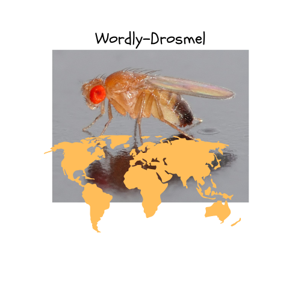

Drosophila melanogaster in Asia
A data collection project

Introduction
This project aims to collect and show IndSeq and PoolSeq genomic data from Asian Drosophila melanogaster samples, linking them to their locations and their availability on NCBI SRA
Data sources
The two sources for this project were From sub-Saharan Africa to China: Evolutionary history and adaptation of Drosophila melanogaster revealed by population genomics by Chen et al. (2024) and Drosophila Evolution over Space and Time (DEST) - A New Population Genomics Resource by Kapun et al. (2021)
Data availability
Download the raw CSV table data from this link
Site map
In Map you will find an interactive map of the data with clickable links to SRA database.
In Data Table you will find the whole data table displayed (the table is searchable!)